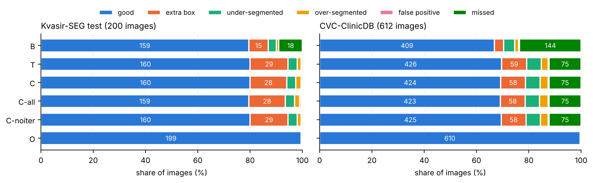
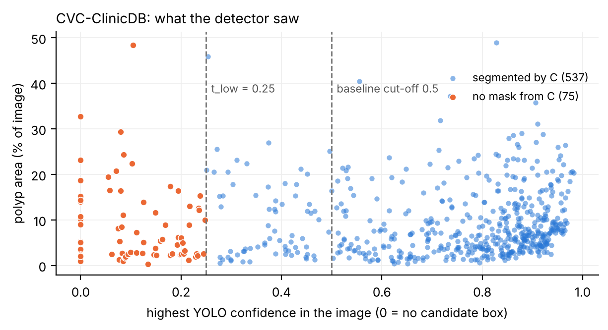
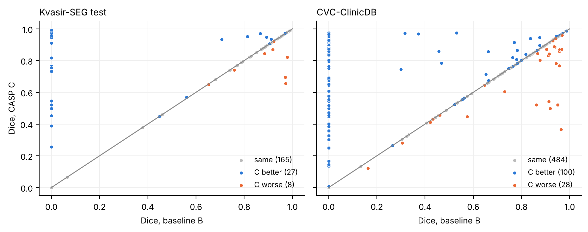
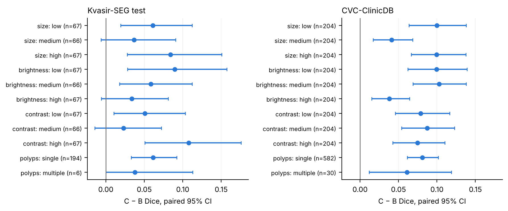

Summary. Phase 4 evaluates the six Phase 3 pipelines without re-running them: B the YOLO → SAM 2 baseline of [1] (boxes ≥ 0.5), T threshold only (boxes ≥ 0.25), C our method CASP v1, C-all (every box refined), C-noiter (no self-prompting) and O the oracle with ground-truth boxes. Detector: YOLOv8-m [2]; segmenter: frozen SAM 2 [3]. Test sets: Kvasir-SEG test (200 images) [4], CVC-ClinicDB (612 images, another hospital, never used for training or tuning) [5], and nine corrupted copies of the Kvasir test split. All 8,472 image–run results are re-scored with new metrics, compared pairwise, labelled by failure type and split into subgroups. Every number below is produced by src/eval/compare.py, error_analysis.py and bias_check.py and is in docs/tables/phase4/; decisions DL-39 to DL-43.
1. Evaluation metrics and results
Segmentation (per image, then averaged): Dice = 2TP / (2TP + FP + FN), which is the pixel F1-score, and IoU = TP / (TP + FP + FN); an image with no prediction scores 0, so a missed polyp is never hidden. Pixel precision TP / (TP + FP), pixel recall TP / (TP + FN), pixel accuracy (TP + TN) / all pixels. Instead of RMSE, which for binary masks is just √(1 − accuracy), we report the area error: |predicted − true polyp area| in percentage points of the image. Detection: box precision, recall and F1, with a box counted correct at IoU ≥ 0.5. Dice and IoU carry 95% bootstrap confidence intervals. The pixel metrics are computed exactly from the saved Dice and area columns (overlap = Dice × (pred + true area) / 2), so no masks or GPU were needed (DL-41).
Kvasir-SEG test (200)
Dice [95% CI]
IoU
Pixel prec.
Pixel recall
Pixel acc.
Area err. (pp)
Missed
Box P / R / F1
B
0.831 [0.792, 0.871]
0.780
0.873
0.810
0.960
3.62
18
0.877 / 0.865 / 0.871
T
0.893 [0.871, 0.913]
0.832
0.929
0.890
0.966
2.93
1
0.807 / 0.947 / 0.871
C
0.891 [0.868, 0.912]
0.831
0.926
0.892
0.963
3.24
1
0.802 / 0.942 / 0.867
C-all
0.885 [0.860, 0.907]
0.824
0.916
0.891
0.958
3.50
1
0.802 / 0.942 / 0.867
C-noiter
0.892 [0.869, 0.913]
0.832
0.927
0.893
0.964
3.18
1
0.807 / 0.947 / 0.871
O
0.952 [0.943, 0.958]
0.912
0.979
0.931
0.985
1.16
0
1.000 / 1.000 / 1.000
CVC-ClinicDB (612)
Dice [95% CI]
IoU
Pixel prec.
Pixel recall
Pixel acc.
Area err. (pp)
Missed
Box P / R / F1
B
0.677 [0.648, 0.710]
0.628
0.712
0.671
0.962
3.60
144
0.890 / 0.686 / 0.774
T
0.759 [0.736, 0.785]
0.698
0.800
0.764
0.966
3.09
75
0.820 / 0.780 / 0.799
C
0.757 [0.734, 0.783]
0.695
0.795
0.765
0.965
3.14
75
0.815 / 0.776 / 0.795
C-all
0.757 [0.734, 0.784]
0.696
0.792
0.768
0.965
3.19
75
0.808 / 0.769 / 0.788
C-noiter
0.757 [0.734, 0.783]
0.695
0.794
0.765
0.965
3.13
75
0.813 / 0.774 / 0.793
O
0.945 [0.942, 0.948]
0.899
0.966
0.928
0.990
0.65
0
1.000 / 1.000 / 1.000
Pixel accuracy cannot tell the runs apart. B misses 18 Kvasir images and 144 ClinicDB images completely and still scores 0.960 and 0.962, because a polyp covers only 9–15% of an image on average. This is why Dice and IoU are the headline metrics and why accuracy and RMSE are reported only for completeness.
2. Comparison of approaches
Every run is compared with B and with T on the same images: the mean per-image difference with a paired bootstrap 95% CI (2,000 resamples), and how many images got better / worse / stayed the same.
Comparison (Dice)
Kvasir-SEG test
CVC-ClinicDB
C − B (our method vs baseline)
+0.061 [+0.032, +0.090], 27 / 8 / 165
+0.080 [+0.060, +0.100], 100 / 28 / 484
T − B (lower threshold alone)
+0.062 [+0.033, +0.092], 22 / 4 / 174
+0.082 [+0.062, +0.102], 93 / 10 / 509
C − T (refinement on top of T)
−0.002 [−0.006, +0.002], 13 / 14 / 173
−0.002 [−0.004, +0.000], 39 / 60 / 513
C-noiter − T (no self-prompting)
−0.001 [−0.005, +0.003], 13 / 10 / 177
−0.002 [−0.004, −0.000], 35 / 38 / 539
C-all − T (refine every box)
−0.008 [−0.021, +0.001], 26 / 54 / 120
−0.002 [−0.005, +0.001], 103 / 122 / 387
O − T (what a perfect detector adds)
+0.059 [+0.039, +0.080]
+0.186 [+0.160, +0.210]
C beats B, and the gain is real. On ClinicDB every polyp metric improves with a CI that excludes zero, for example pixel recall +0.094 [+0.072, +0.115] and area error −0.45 pp [−0.72, −0.19]. On Kvasir the same holds for Dice, IoU, pixel precision and pixel recall. C is also above B in all nine corrupted settings, again with every CI above zero (+0.019 to +0.082).
The gain is recall, and the whole of it comes from the lower threshold. T reaches the same improvement as C; the refinement steps (four prompts, self-prompting, acceptance check) are neutral or slightly negative, and on ClinicDB C is slightly less precise than T (pixel precision −0.005 [−0.010, −0.001]).
There is a precision cost. Box recall rises (0.865 → 0.942 on Kvasir) but box precision falls (0.877 → 0.802), so box F1 does not move on Kvasir (0.871 → 0.867) and gains only 0.02 on ClinicDB. Box precision also falls in eight of the nine corrupted settings.
3. Error analysis
Each image of each run gets one label, checked in order: missed (no prediction), false positive (Dice 0), extra box (the polyp is found but a wrong box is kept too), good (Dice ≥ 0.7), under- or over-segmented (Dice < 0.7, mask smaller or larger than the polyp) (DL-41).

Figure 1. Error type of every image, per run (counts inside the bars). The oracle O is almost all "good", so with a correct box SAM 2 rarely fails.
C changes the kind of error more than the number. On Kvasir it turns 17 of B's 18 misses into masks but nearly doubles the extra-box cases (15 → 28); images that are not "good" only go from 41 to 40. On ClinicDB misses fall 144 → 75 and extra boxes rise 22 → 58. Extra-box images are still usable (mean Dice 0.81 and 0.79), but each one contains a false alarm.
Where C wins and loses on Kvasir. 27 images improve (17 are former misses) and 8 get worse; the losses cost 0.86 Dice points in total against 13.0 gained. The two worst losses (0.97 → 0.66 and 0.97 → 0.69) keep a second box of YOLO confidence 0.41–0.42 next to the real polyp, and SAM 2 rates that wrong mask 0.95 and 0.92, almost as high as the polyp (0.97): SAM 2's own score cannot tell a polyp from a wrong region, which is why the acceptance rule never rejected anything. Two further losses are single boxes just above 0.5 that C re-prompts and makes slightly worse.
75 ClinicDB images get no mask from any run except O (Figure 2). In 19 YOLO proposes no box at all; in 56 every box is below 0.25 (the highest is 0.248). With the true box SAM 2 segments them at Dice 0.92, so the failure is the detector's. They are slightly smaller than average (median polyp area 5.3% vs 7.0%) but include polyps up to 48% of the image. Exactly the 69 images whose best box lies between 0.25 and 0.5 are the ones C and T rescue.


Figure 2. Left: every ClinicDB image by the detector's highest confidence and polyp size; orange images get no mask from C. Right: per-image Dice of B against C; points on the left edge are B's misses that C recovers.
4. Bias and fairness check
We checked whether the method helps some kinds of images more than others. Polyp size, brightness and contrast are split into equal thirds within each dataset, and images are also grouped by number of polyps, dataset, resolution and corruption. Inside each group C − B is a paired bootstrap interval (Figure 3; tables in docs/tables/phase4/bias_*.csv).

Figure 3. Gain of C over B inside each subgroup (paired 95% CI). Every ClinicDB interval is above zero; on Kvasir four small groups touch zero.
No group is made worse. Every subgroup's mean gain is positive. On ClinicDB all intervals exclude zero; on Kvasir, medium-size polyps, bright images, medium-contrast images and the 6 multi-polyp images have intervals that include zero, which with 6–67 images per group means "not shown", not "no effect".
The baseline is uneven, and the method narrows some gaps. On ClinicDB the baseline misses 30% of the smallest third of polyps against 14% of the middle third, and 29% of dark images against 14% of bright ones; C gives the largest gains exactly in those groups (+0.100 small, +0.100 dark) and roughly halves their miss rate (to 16% and 15%).
Multi-polyp images remain the weakest group. On ClinicDB their Dice is 0.452 (B) and 0.513 (C), against 0.689 and 0.770 for single polyps, with only 30 such images. The domain gap is the largest effect: the same pipeline scores 0.891 on Kvasir and 0.757 on ClinicDB, and severe noise defeats both pipelines (96–98% of images missed).
Limits of the check. The factors are correlated (e.g. dataset with brightness and size), the thirds are dataset-specific, and the groups are small, so these are associations, not causes. ClinicDB has a single image size, so resolution can only be compared within Kvasir.
5. Key insights and observations
The method works, for a reason we did not plan. CASP v1 beats the baseline on both test sets, all nine corruptions and every subgroup, but the gain comes entirely from keeping boxes with confidence 0.25–0.5; the refinement steps add nothing measurable. We report it as it is.
It is a recall method with a precision cost. Misses fall from 18 to 1 and from 144 to 75, but false boxes double. For screening a missed polyp is usually the worse error, but box F1 shows the trade-off more honestly than Dice.
The bottleneck is the detector under domain shift, not SAM 2. With correct boxes SAM 2 reaches about 0.95 on both hospitals. Every main failure starts with a box YOLO missed, scored too low, or placed on the wrong structure.
SAM 2's confidence is the wrong filter. It rates wrong boxes almost as highly as real polyps. A useful filter needs another signal, e.g. agreement between the masks from different prompts or YOLO confidence combined with SAM's score; this is the next step, tested on the saved detection logs (CPU only).
6. Challenges faced
New metrics without re-running anything. Pixel precision, recall and accuracy need the overlap of the two masks, which was not saved. It follows exactly from Dice and the two saved areas, so all runs were re-scored on a CPU in seconds (DL-41).
Keeping Phase 3 numbers fixed and reproducible. Recomputing means from rounded per-image values moves some by 0.001, so Dice and IoU are taken from the Phase 3 results file; all 162 paired comparisons now come from one script instead of a one-off calculation, and re-running the notebook gives byte-identical tables.
Merging two analyses. Both members edited the decision log and report in parallel, which caused a merge conflict and a duplicated decision number; an accidental find-and-replace had also changed earlier log entries. The branches were merged by hand, and every bias table was re-generated from the script to confirm it.
Small subgroups. Some bias groups have 6–67 images, so their intervals are wide; we report sample sizes and intervals rather than single averages.
Work division (record: project-division/Project-Division-Phase-4.md). Kashish Fatima (lead): Phase 4 plan, metric and bias-check design, review. Khushbakht Sohail: new metrics, bias check and ClinicDB example figure, §1 and §4. Zahra Saeed: comparison, error analysis, analysis notebook, merge of both branches, this report.
References
M. Mansoori, S. Shahabodini, J. Abouei, K. N. Plataniotis, and A. Mohammadi, “Self-prompting polyp segmentation in colonoscopy using hybrid YOLO-SAM 2 model,” 2024, arXiv:2409.09484.
G. Jocher, A. Chaurasia, and J. Qiu, “Ultralytics YOLOv8,” 2023. [Online]. Available: https://github.com/ultralytics/ultralytics
N. Ravi et al., “SAM 2: Segment anything in images and videos,” 2024, arXiv:2408.00714.
D. Jha et al., “Kvasir-SEG: A segmented polyp dataset,” in MultiMedia Modeling (MMM 2020), Lecture Notes in Computer Science, vol. 11962. Cham, Switzerland: Springer, 2020, pp. 451–462.
J. Bernal, F. J. Sánchez, G. Fernández-Esparrach, D. Gil, C. Rodríguez, and F. Vilariño, “WM-DOVA maps for accurate polyp highlighting in colonoscopy: Validation vs. saliency maps from physicians,” Comput. Med. Imag. Graph., vol. 43, pp. 99–111, Jul. 2015.